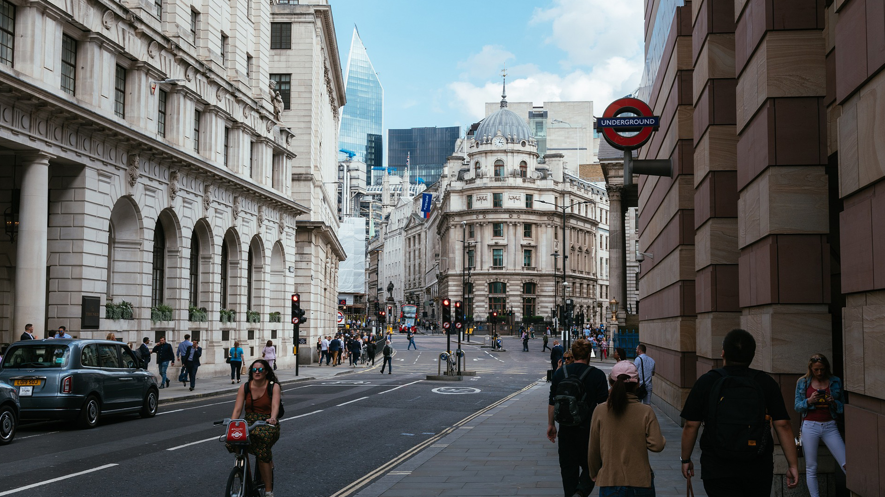

ケンブリッジと言えば、やっぱりパンティング!楽しい時間を過ごすなら絶対トライすべきです。
ロンドンと言えばタワーブリッジ！
ロンドンの絵葉書の定番中の定番であるタワーブリッジ。実際に見ると、やっぱり綺麗で感動しますよ。いつも曇り空のロンドンですが、今日は少し晴れていたので、タワーブリッジが綺麗に見えました。
一度は訪れたいケンブリッジ！
ケンブリッジはロンドンのヴィクトリアコーチステーションから、バスで約２時間くらいで到着します。由緒ある大学が立ち並ぶとても綺麗なところですよ。私は友達と一緒によく遊びにいって、有名大学の芝生の上で記念撮影してましたw
ヨーロッパの金融の中心地。シティ。
ロンドンの人って、すごく早く歩きますよね。特にこのシティのあたりは、歩くのが早いと思っています。。。正面に見えるのは、セントポール大聖堂です。中は見学できるんですよ。